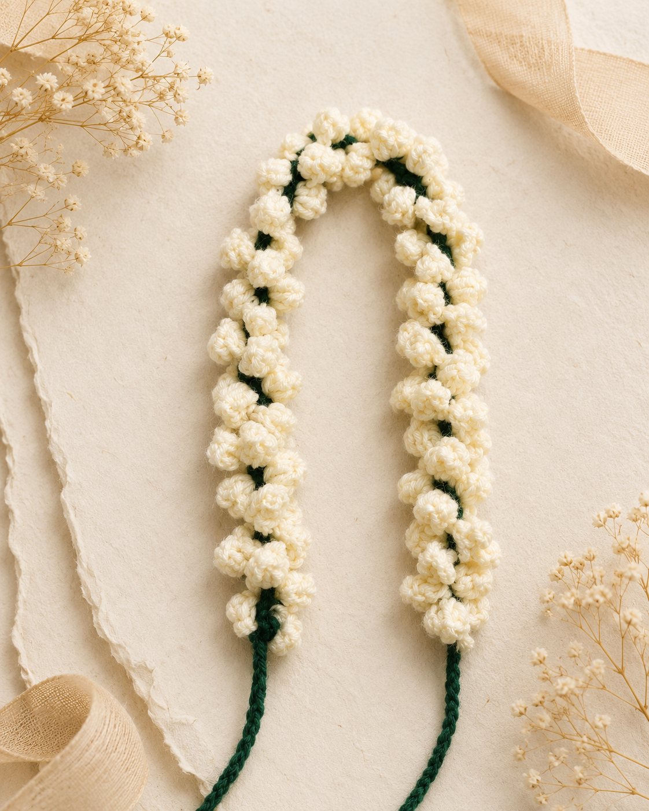
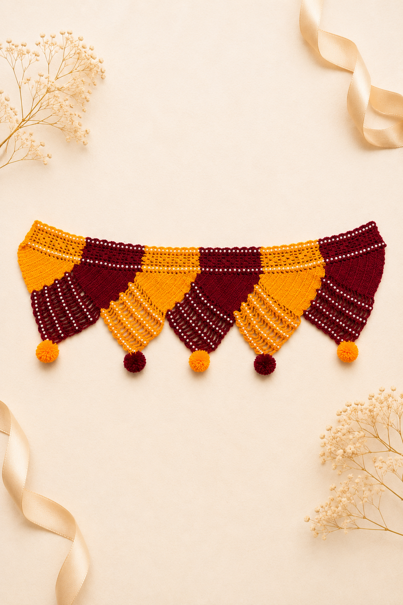
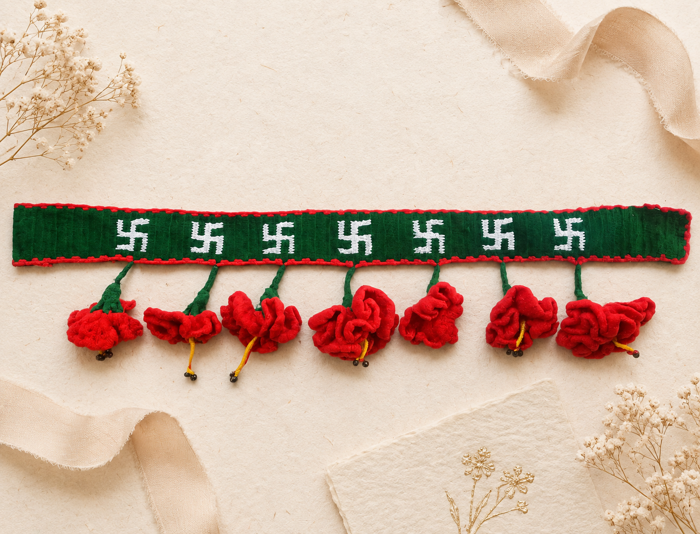
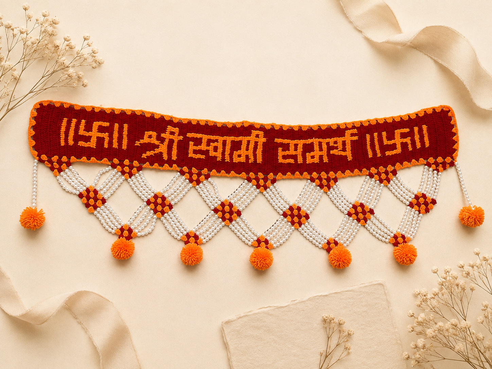
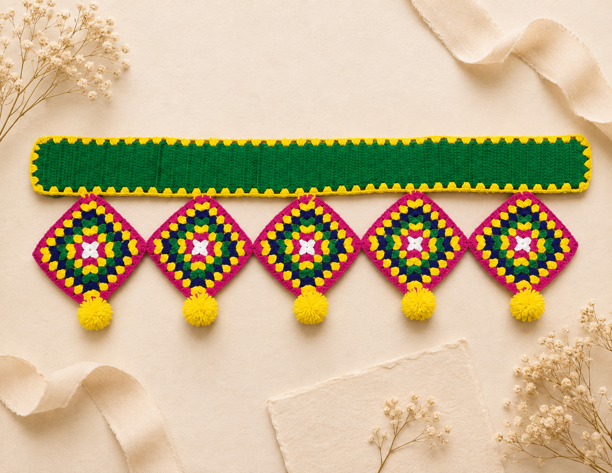

Our Collection
Every crochet piece is handcrafted with premium yarn and lots of love.

Gajra
Traditional crochet flower garlands perfect for weddings, festivals and special occasions.

Samae Decor
Elegant handmade décor pieces crafted to brighten your pooja space and home.

Classic Floral Toran
Beautiful handcrafted torans designed to welcome positivity into every home.

Hibiscus Toran
Rich red crochet hibiscus with traditional detailing, perfect for festive and wedding décor.

Swami Samarth Toran
A beautifully handcrafted Swami Samarth crochet toran featuring intricate lettering and elegant pearl detailing, perfect for your home temple or entrance.

Granny Square Toran
Colourful granny square toran finished with cheerful pom-poms to brighten every doorway.